Graphic Novels & Comics · von Seduth bis Boom! Studios · nach dem Revelations-Archiv
Die Graphic Novels
Comics begleiten Barker seit der Kindheit — als Leser wie als Autor: eigene Geschichten, die es nur als Comic gibt, Adaptionen seiner Romane bei IDW, die großen Boom!-Serien um Pinhead und einen abdankenden Gott — und ein Marvel-Imprint mit zehn eigenen Welten.
Eigene Comic-Geschichten
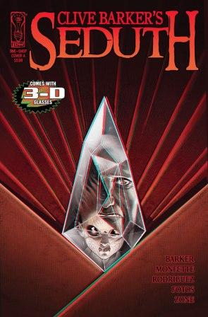
Worum es geht
Das Archiv hebt die Geschichten hervor, die Barker eigens fürs Medium Comic geschrieben hat: Seduth, The Waiting Room, Field, Primal und Night of the Living Dead: London — dazu die zehn Welten der Decamundi, die er 1993 für Marvels Razorline-Imprint erfand.
Die Geschichten
-
Seduth (2009): 24 Seiten über einen verseuchten Diamanten, geschrieben mit Chris Monfette, gezeichnet vom Locke-&-Key-Team Gabriel Rodriguez und Jay Fotos — und von 3D-Pionier Ray Zone komplett für echtes 3D angelegt, weil die vierte Dimension der Geschichte nach der dritten verlangte. Für Barker ein Traumprojekt: Comics seien ein Medium, das sich Risiken noch leisten kann.
IDW · 2009
-
The Waiting Room (2004): Nachdem Voltaire in Deady die Cenobiten als „Stenobiten" aus der Hölle des mittleren Managements parodiert hatte, revanchierte sich Barker — mit einem eigens für den boshaften Teddy geschriebenen Albtraum, den Voltaire illustrierte.
Sirius Entertainment · 2004
-
Die frühen Originale: Primal, mit Dark Horse 1992 als Graphic Novel und Zweiteiler erschienen — und Night of the Living Dead: London bei Fantaco 1993, in zwei Bänden samt limitierter Hardcover-Ausgaben.
Dark Horse 1992 · Fantaco 1993
-
Und für Marvel entwarf Barker 1993 gleich zehn neue Wirklichkeiten: die Decamundi des Razorline-Imprints mit den Serien Hyperkind, Hokum & Hex, Saint Sinner und Ectokid — vom Verleger Carl Potts augenzwinkernd „Barkerverse“ getauft.
Marvel / Razorline · 1993
Aus dem Archiv
Klick vergrößert das Cover
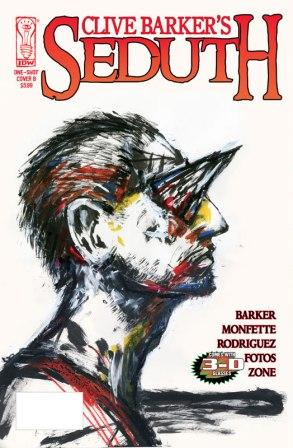
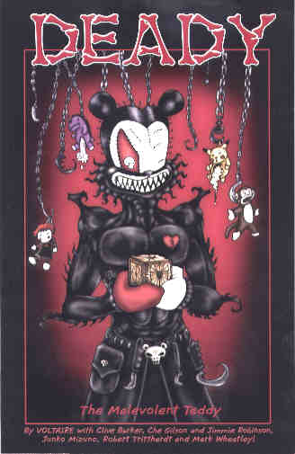
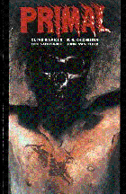
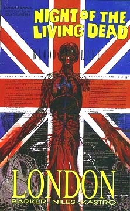
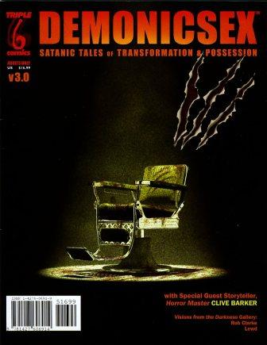
Die IDW-Adaptionen
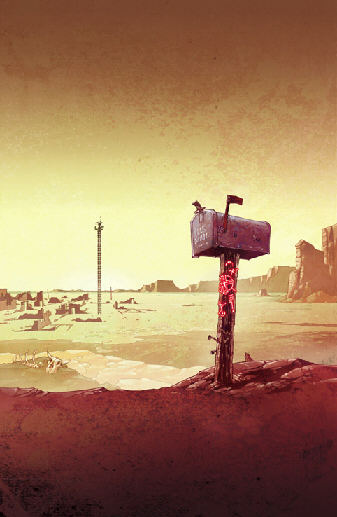
Worum es geht
Mit IDW fand Barker Mitte der Nullerjahre sein Comic-Zuhause: Erst adaptierten Kris Oprisko und Gabriel Hernandez The Thief of Always, dann wagte sich Chris Ryall an die Quiddity-Mythologie von The Great and Secret Show — zwölf Hefte, gezeichnet von Gabriel Rodriguez.
Die Reihen
-
The Thief of Always erschien 2005 als Dreiteiler und in Sammelbänden — darunter eine auf 500 Exemplare limitierte, von Barker signierte Hardcover-Ausgabe. Die Fabel von 1992 war da längst Schullektüre in Großbritannien und den USA.
IDW · 2005
-
The Great and Secret Show hatte Barker schon zu Eclipse-Zeiten als Comic gewollt; Chris Ryall überzeugte ihn, dass die epische Geschichte in zwölf Heften erzählbar ist, ohne ihre Größe zu verlieren. Heft eins war beim Distributor sofort ausverkauft — mit Variant-Covern bis hin zu von Barker signierten Sketch-Covern.
IDW · 2006–2007
-
2011 bündelte IDW alles in einem Omnibus: Thief of Always, The Great and Secret Show und Seduth in einem Band; 2016 folgte die übergroße Deluxe-Hardcover-Ausgabe der Show.
IDW · 2011–2016
Aus dem Archiv
Klick vergrößert das Cover
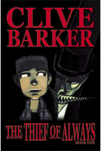
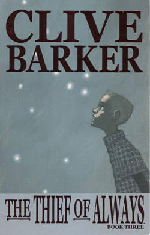
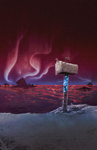
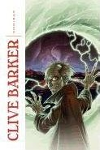
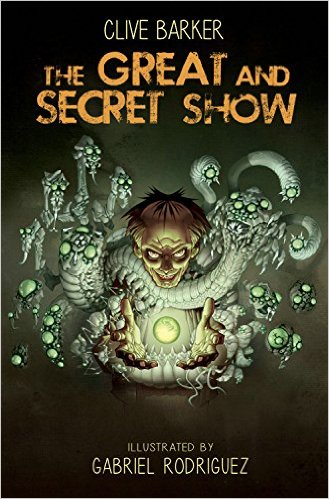
Boom! Studios
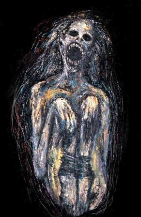
Worum es geht
Bei Boom! Studios kehrte Barker als Comic-Autor zu seinen Figuren zurück: Ab 2011 schrieb er mit Chris Monfette erstmals seit Jahrzehnten wieder selbst an Pinheads Geschichte, 2013 folgte mit Next Testament eine neue Schöpfung, 2014 die Nightbreed-Serie.
Die Reihen
-
Die Hellraiser-Serie startete mit dem frei verfügbaren Prolog At The Tolling Of A Bell und Heft eins in mehreren Variant-Covern — darunter Barkers eigenes Gemälde Death’s Womb neben Artwork von Tim Bradstreet und Nick Percival.
Boom! Studios · 2011
-
Next Testament (2013, mit Mark Miller): zwölf Hefte über Wick, den in Farben gekleideten Vater der Schöpfung, der in die Gegenwart zurückkehrt — mit Covern von Goni Montes und einer limitierten Barker-Variante zum Auftakt.
Boom! Studios · 2013–2014
-
Und Nightbreed bekam 2014 seine eigene Serie von Marc Andreyko — mit Incentive-Covern, für die sich unter anderem Hellboy-Schöpfer Mike Mignola nach Midian wagte.
Boom! Studios · 2014–2015
Aus dem Archiv
Klick vergrößert das Cover
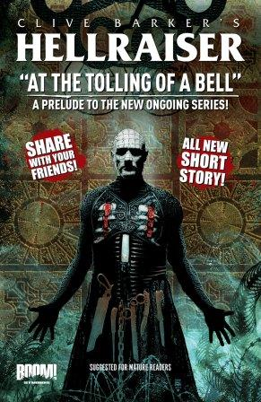
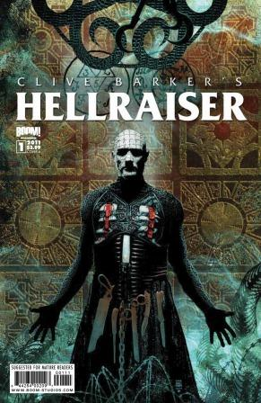
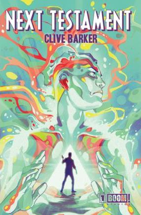
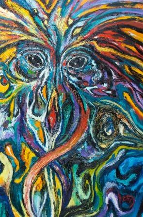
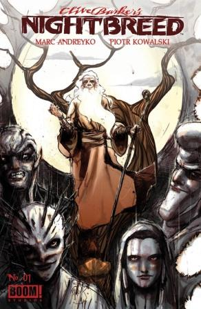
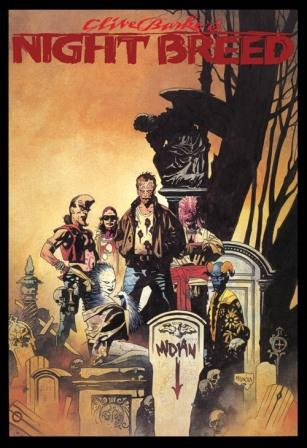
Weitere Verlage & Formate
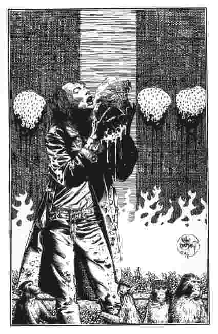
Worum es geht
Jenseits der großen Reihen sammelt das Archiv die Ausreißer: eine verschollene Adaption, die nach fünfzehn Jahren doch noch erschien, eine hauseigene Hellraiser-Anthologie — und die Books of Blood als animierte Motion Books.
Die Projekte
-
Age of Desire, adaptiert von P. Craig Russell und gezeichnet von Tim Bradstreet, war Anfang der Neunziger für Eclipse fertig — dann kollabierte der Verlag und die Arbeit verschwand. Erst Desperado Publishing brachte den Band Jahre später heraus, samt Nachworten beider Künstler und Russells verworfenen Seiten.
Desperado Publishing · 2009
-
2017 legte Barkers eigene Firma nach: Seraphim Comics’ Hellraiser Anthology, herausgegeben von Ben Meares, mit Künstlern wie Daniele Serra und Nick Percival — die Spitze der Auflage: zehn von Barker signierte und mit Skizzen versehene Exemplare.
Seraphim Comics · 2017
-
Und bei Madefire wurden die Books of Blood beweglich: Mark Alan Miller und Sam Shearon adaptierten die Blutbücher als zwölfteilige Motion-Book-Serie — beginnend mit dem Haus in der Tollington Place 65.
Madefire Motion Books · 2015
-
Wie aus Prosa Panels werden, zeigt das Archiv übrigens Schritt für Schritt: In der „Anatomy of a Scene“ wird eine Schlüsselszene aus Son of Celluloid vom Erzähltext bis zur fertigen Graphic-Novel-Seite seziert.
Revelations-Archiv · Anatomy of a Scene
Aus dem Archiv
Klick vergrößert das Cover
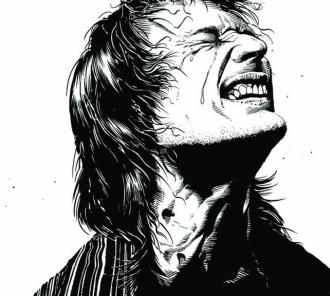
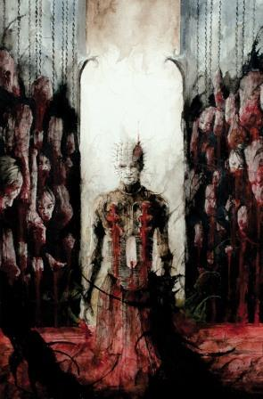
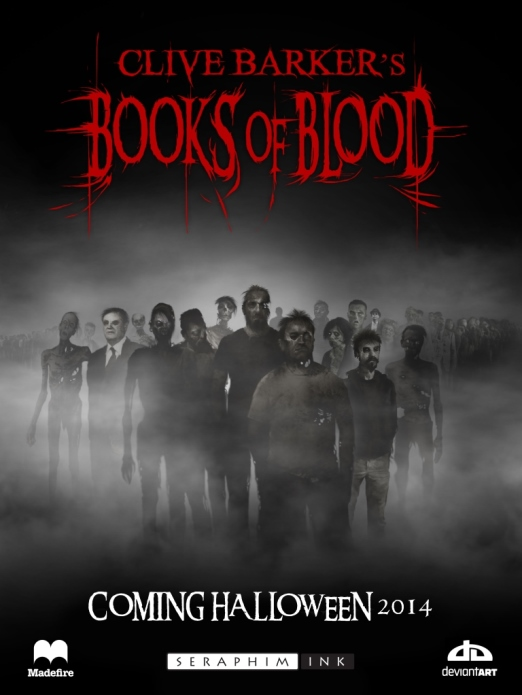
Cover-Abbildungen: Revelations-Archiv (clivebarker.info) · Artwork © Clive Barker bzw. der jeweiligen Verlage